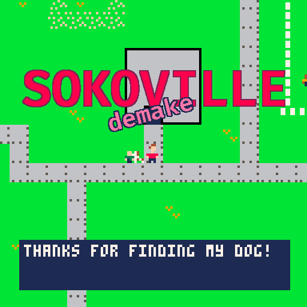

Sokoville - demake

SOKOVILLE (not this game) is a game I have been working on for a few months. At its core, it is a sokoban-like puzzle game. You solve puzzles throughout the world, which enable you to help characters in that world.
A simple example is: There is a boy in the town who is missing his dog. You're in the forest and you come across the dog. You need to push blocks to make a way out of the forest, and you also need to push the dog out of the forest and back to its owner.
SOKOVILLE - demake (the game you are viewing) is a proof of concept of the above idea. It is meant to be a lightweight implementation, who's primary purpose is to get feedback for the main game.
Instructions
Perform all the tasks in the task list.
Controls
Press/Hold arrow keys to move
Press X to cycle items
Press/Hold Z to rewind
Hold Z + X to view tasks
| Status | Released |
|---|---|
| Platforms | HTML5 |
| Rating | Rated 5.0 out of 5 stars(1 total ratings) |
| Author | mikepurdy |
| Genre | Puzzle |
| Made with | PICO-8 |
| Tags | PICO-8, Sokoban |